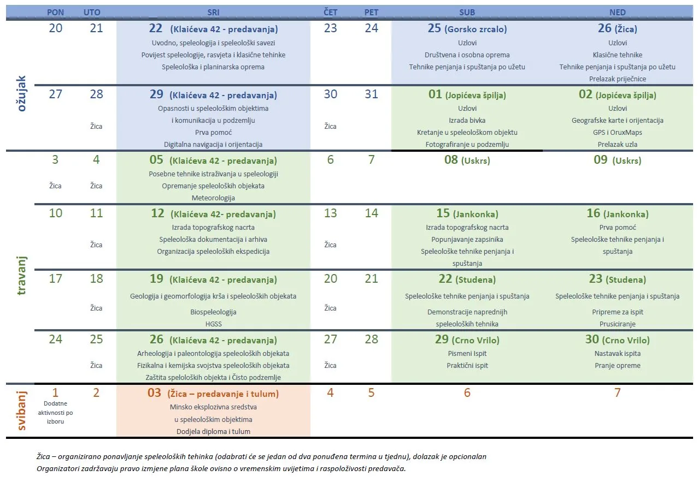

Prijave za 53. speleološku školu
Otvoreni su upisi u ovogodišnju, 53. po redu Zagrebačku speleološku školu. Sve što trebate znati o tome potražite ovdje

EDIT: 53. ŠKOLA JE POPUNJENA I PRIJAVE VIŠE NISU MOGUĆE. POSTOJI I LISTA ČEKANJA, A ZA OSTALE VIŠE SREĆE DOGODINE :)
Tražiš avanturu koja će razbiti tvoju svakidašnjicu i pružiti ti nezaboravno iskustvo?
Želiš li saznati kakav je osjećaj hodati mjestima na koja ljudska noga još nije kročila?
Želiš li vidjeti prelijepa mjesta koja su nevidljiva običnom puku?
Ako je tvoj odgovor DA, onda je pravo vrijeme da upišeš 53. speleološku školu i postaneš istraživač podzemnih prostranstva, jer su podzemlje i podmorje su još jedina neistražena mjesta na našoj planeti!
Kada kreće speleološka škola i kako je organizirana?
Škola se odvija u periodu od 22.3.2023.-3.5.2023. i to srijedom od 18-21h kada imamo teorijska predavanja i vikendima kada savladavamo praktične vještine kretanja po speleološkom objektu. Tereni su svaki vikend osim za Uskrs kada imamo pauzu da se svi malo odmorimo 😊
Što ćeš naučiti?
Naučit ćeš svašta, od toga kako koristiti specijaliziranu opremu za kretanje u jami, kako boraviti u prirodi i orijentirati se, te će ti biti prezentirane malo stručnije teme poput arheologije, meteorologije, biospeleologije, geologije, klime podzemlja i prve pomoći. Više od svega shvatit ćeš što znači biti dio tima i jedne malo otkačene zajednice, dobro se zabaviti te steći nova prijateljstva.
Cjelokupni program možeš vidjeti u nastavku objave.
Koja ćeš sve mjesta posjetiti?
Prvi teren je na Medvednici, Gorsko zrcalo. To je otvorena stijena na kojoj ćemo vježbati tehnike penjanja i spuštanja. Isto ćemo raditi i na drugom terenu ali ovog puta na poligonu HGSS-a (bivša žičara na Sljemenu, koju mi popularno zovemo Žica). Spavati ćemo u svojim kućama, tako da ti za prvi vikend ne treba vreća, dok je za sve ostale terene nužno da je imaš (ili posudiš od nekog). Idući vikend idemo u Jopićevu špilju – pravi podzemni labirint dugačak više od 6 km gdje ćemo se kretati uz vodiče i putem vidjeti pregršt špiljskih ukrasa. Nakon male stanke posjetit ćemo Jankonku blizu Bosiljeva, malo manju špilju s jamskim ulazom, no nimalo manje bogatu špiljskim ukrasima. Selimo se zatim u okolicu Klane (Rijeke), gdje ćeš imati priliku usavršiti tehnike penjanja i spuštanja u još dvije jame i posjetiti jednu manju špilju. Posljednji teren idemo na jug Velebita gdje ćeš proći kroz svoju prvu podzemnu transverzalu – ponor Crno Vrilo.
A koja je cijena?
Cijena škole iznosi 120 eura ako si student, a 150 eura ako si zaposlen. U cijenu ti je uključeno 6 termina predavanja, 6 terena u odabrane špilje, jame te na otvorene stijene, osiguranje od nezgoda od HPS te dodatno osiguranje od osiguravajuće kuće, sva potrebna speleološka tehnička oprema uz mogućnost posuđivanja opreme i nakon završene škole, zamka (pomoćno uže duljine 5 m), popust na kupovinu planinarske, speleološke i druge opreme u specijaliziranim trgovinama te poklon iznenađenja za kraj škole.
Školu možeš platiti jednokratno ili na dvije rate za što ćeš dobiti uplatnice na temelju tvojeg odabira u online prijavnici. Od dodatnih troškova imati ćeš još trošak hrane i trošak prijevoza (izračunali smo da bi oni iznosili sveukupno za cijelu školu cca 50 eura po osobi ako putuješ popunjenim autom).
Kako se prijaviti?
Prijaviti se možeš putem obrasca ali svakako prije prijave OBAVEZNO PROČITAJ često postavljana pitanja da stekneš malo bolji dojam kako izgleda naša škola. Požuri s prijavom jer je broj polaznika ograničen na 20 polaznika, a prethodnih godina su se popunule u roku od nekoliko dana. Nakon popunjene prijavnice kontaktirati će te voditeljica kako bi obavila s tobom razgovor i odgovorila ti na sva tvoja pitanja.
Kontakt: speleoskola.sov@gmail.com
Voditeljica škole: Marina Grandić
Na kraju, pogledaj kako smo se zabavili na prethodnim školama
PROGRAM 53. SPELEOLOŠKE ŠKOLE SO PDS VELEBIT